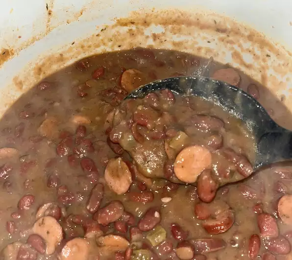

Red Beans and Rice

Description
Here is a great one pot weeknight dish the whole family will love.
hearty red beans in a tasty gravy served over rice.
Ingredient List
- 1 red onion
- 1 large bell pepper (red preferred)
- 2 stalks of celery
- 1lb of precooked andoulle sausage
- 1 tsp smoked paprika
- 2 bay leaves
- 1 tsp dried sage
- 1 tsp dried oregano
- 2 cans red beans, drained and rinsed
Instructions
- Preheat a dutch oven with some oil over medium high heat and
cook the cut sausage until browned evenly, Add chopped onion,
bell, and celery. Cook until onion is soft and translucent
- add spices and cook till fragrant then add water to cover
bring to boil then cook for 20 min
- Add beans and cook for another 20 minutes
- serve over rice :)